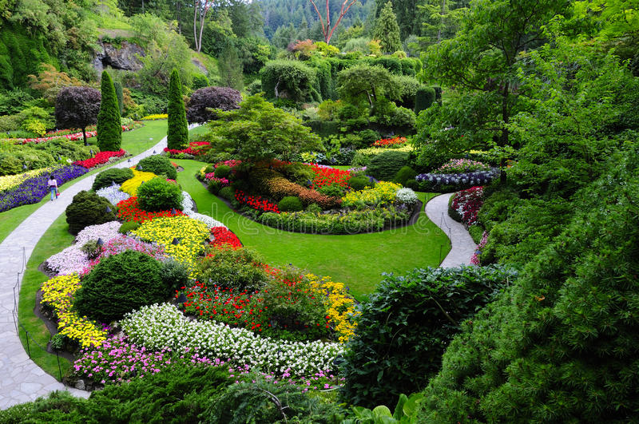

Based in Tuscon, Arizona, Lucky Shrub is a medium-sized garden design firm that specializes in garden design and creation, maintenance and landscaping. The company also runs a small plant nursery that sells indoor and outdoor plants, making them a one-stop shop for clients to "transform any space into an oasis you can be proud of
Heading 1

Based in Tuscon, Arizona, Lucky Shrub is a medium-sized garden design firm that specializes in garden design and creation, maintenance and landscaping.
The company also runs a small plant nursery that sells indoor and outdoor plants, making them a one-stop shop for clients to "transform any space into an oasis you can be proud of
Heading 2
Based in Tuscon, Arizona, Lucky Shrub is a medium-sized garden design firm that specializes in garden design and creation, maintenance and landscaping.
The company also runs a small plant nursery that sells indoor and outdoor plants, making them a one-stop shop for clients to "transform any space into an oasis you can be proud of
Heading 3

Based in Tuscon, Arizona, Lucky Shrub is a medium-sized garden design firm that specializes in garden design and creation, maintenance and landscaping.
The company also runs a small plant nursery that sells indoor and outdoor plants, making them a one-stop shop for clients to "transform any space into an oasis you can be proud of